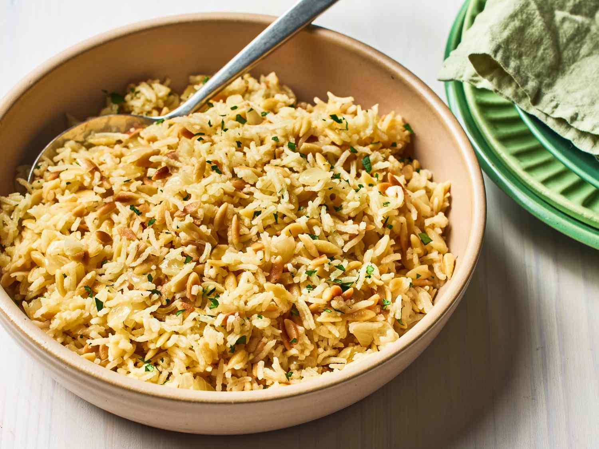

Rice Pilaf Recipe

Description
A delicious and aromatic rice dish that's perfect as a side dish or main course.
Ingredients
- 2 cups long-grain rice
- 4 cups chicken or vegetable broth
- 1 onion, diced
- 3 cloves garlic, minced
- 2 tablespoons butter
- Salt and pepper to taste
Steps
- Melt butter in a large pan over medium heat
- Sauté onions until translucent (about 5 minutes)
- Add garlic and rice, cook until rice is lightly toasted
- Pour in broth, bring to a boil
- Reduce heat, cover and simmer for 18-20 minutes
- Let stand for 5 minutes, then fluff with fork
Return to homepage